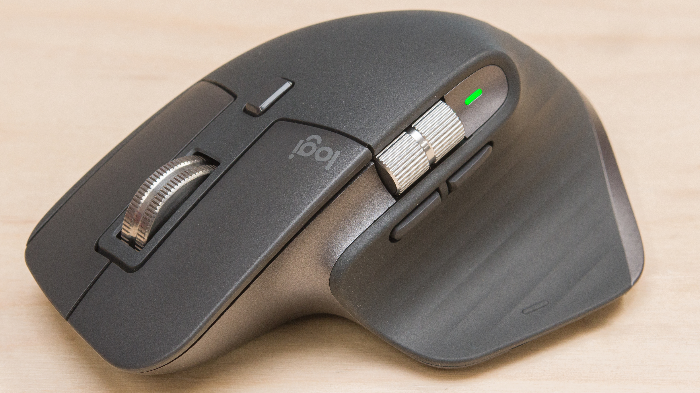

Logitech MX Master 3S
O Logitech MX Master 3S dá continuidade à linha de topo com foco na produtividade e trabalho. O rato brilha em ambas vertentes e, mantendo o design do seu antecessor, está mais agradável de usar ao não distrair o utilizador com cliques ruidosos. A linha de ratos para trabalho Logitech MX Master é, há vários anos, o ponto de referência para quem procura um rato focado na produtividade, versatilidade e conforto de utilização. A pressão sobre a marca é muita com a concorrência feroz, mas felizmente o produto continua a melhorar a cada nova iteração. Temos pequenas melhorias e aperfeiçoamentos que tornam o MX Master 3S no melhor rato para trabalho no mercado. Está mais moderno e adaptado ao ambiente de trabalho em escritório, ou a partir de casa, mais preciso e silencioso.
O rato tem uma construção sólida, relativamente alto e com arestas arredondadas, conferindo-lhe um design marcada orgânico. Ideal para mãos maiores, ou para quem gostar de agarrar todo o rato e repousar confortavelmente a mão, a ergonomia é incrível. O exterior não mudou, o que para quem queria um novo design, ou alguma diferença exterior são notícias menos positivas, certo é que a excelente ergonomia e qualidade de construção perduram. Este é um rato muito bem-composto e construído.
Queres saber mais? Ve este vídeo que explica mais sobre o novo Logitech MX Master 3S.

Keychron Q6
Desde o seu lançamento inicial, Keychron tornou-se um dos nomes mais populares na comunidade de teclados mecânicos e é conhecido pelos seus teclados. Os teclados keychron anteriores eram modelos de pequena dimensão, mas com os mais recentes teclados Q5 e Q6, finalmente oferecem um teclado em tamanho real. Embora adore os teclados anteriores do Keychron, perdi um teclado numérico para o trabalho de escritório, e embora acessórios como o teclado numérico QO previamente analisado sejam bons - continuo a preferir ter um teclado numérico integrado.
Tal como os teclados anteriores da série Q, o Q5 e o Q6 são extremamente robustos, consistindo de um corpo de alumínio e uma placa de aço. Este não é um teclado leve - pesa mais de 2,5 libras. Se o apocalipse zombie acontecesse e não tivesses mais nada com que te defenderes, o Q5 ou o Q6 seriam muito úteis. As teclas incluídas são OSA PBT de duplo gatilho. Estes são os teclados mais silenciosos que testei pessoalmente, que combinados com um teclado numérico integrado tornam o Q5 e o Q6 ideais para trabalho de escritório - estes modelos também são muito confortáveis para escrever, mesmo por longos períodos de tempo, ao contrário de outros teclados mecânicos que podem causar tensão nos dedos se você esmagar os dedos por muito tempo.
Queres saber mais? Ve este vídeo que explica mais sobre o novo KEYCHRON Q6.

Sony WH-1000XM5
Quando se fala de auscultadores sem fios com uma grande capacidade de cancelamento de ruído, é simplesmente impossível não falar da Sony e da sua incrível gama WH-1000XM, que discutivelmente, chegou ao pico da montanha da popularidade com os WH-1000XM3. Sim, entretanto, tivemos uma nova versão na forma dos WH-1000XM4, mas a verdade é que este lançamento não significou uma grande revolução nos auscultadores, com a Sony a apostar no mesmo exato design e capacidades técnicas dos XM3 (que ainda hoje continuam fantásticos), com o acréscimo da ligação a dois aparelhos ao mesmo tempo.
Portanto, além do acréscimo no preço (~450€), os WH-1000XM5 também mudam um pouco a fórmula vencedora da Sony, ao apostar num design mais simples, mais jovial, isto ao mesmo tempo que também vemos uma melhoria muito significativa no ANC, que verdade seja dita, nos modelos antigos, já era excelente. Sim, os novos auscultadores topo de gama da Sony são bonitos, são leves, e acima de tudo, são confortáveis. O que muito se deve a um renovado foco nos materiais utilizados, desde a frame de metal, aos plásticos, e até à pele sintética.
Queres saber mais? Ve este vídeo que explica mais sobre os novos Sony WH-1000XM5.

HyperX QuadCast
Para começar, na parte superior do microfone, existe um teclado de toque que pode silenciar o microfone. Esta é facilmente uma das funcionalidades mais úteis, especialmente se precisar de cortar rapidamente o áudio durante um live stream. Silenciar o microfone também desativa os LEDs coloridos, por isso obtém feedback instantâneo de que é seguro falar. O evento principal no Quadcast S são as luzes LED. Normalmente, não daria muito crédito a um gadget por ter iluminação RGB - especialmente algo voltado para os jogadores, onde isto é quase legalmente necessário - mas o HyperX acertou ao fazê-lo com bom gosto.
É claro deste design que o HyperX espera que este microfone seja visto. Esta é talvez uma grande parte da razão pela qual tantos streamers do Twitch estão a usá-lo. Como uma experiência, enquanto escrevia esta crítica, abri o Twitch e verifiquei uma variedade aleatória de streamers. Dos 15 que pude ver no ecrã, cinco deles usaram uma versão do Quadcast. O Quadcast S é tão conveniente, tão elegante e tem um som tão bom que é difícil imaginar como poderia ser melhor sem mudar fundamentalmente para quem foi projetado.
Queres saber mais? Ve este vídeo que explica mais sobre o novo HyperX QuadCast.